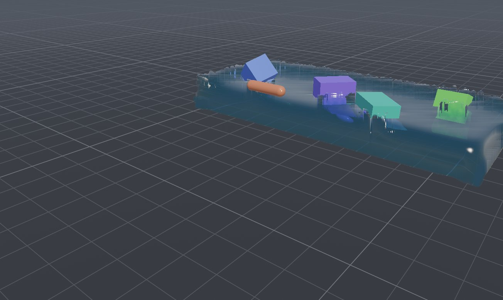

Physics and shaders on the GPU, in your browser.
Rigid bodies and joints, fluids that push them around, cloth, smoke, a WGSL shader library, neural networks and rollback netcode.
Examples
Open the example browserStart in ten lines
The SDK in detailWrite the body of a compute shader; ShaderIntel generates the bindings, a byte-exact uniform struct, the dispatch and the frame loop. Or describe a scene in React and let components own the GPU memory.
import * as SI from 'shaderintel';
const gpu = await SI.init();
const view = gpu.view('#canvas', { bloom: true });
const pos = gpu.array('vec4f', 1_000_000);
gpu.kernel({ imports: ['hash'], buffers: { pos },
code: `var s = rngSeed(i, 1u); pos[i] = vec4f(randBall(&s), 1.0);` }).run(1_000_000);
const flow = gpu.kernel({ imports: ['noise'], buffers: { pos }, uniforms: { dt: 'f32' },
code: `pos[i] += vec4f(curl3(pos[i].xyz) * u.dt, 0.0);` });
view.add(gpu.points({ data: pos }));
view.run(({ dt }) => flow.run(1_000_000, { dt }));
import { Canvas, Stage, Physics, Box, Sphere } from 'shaderintel-react';
export function Scene() {
return (
<Canvas camera={{ target: [0, 1, 0], distance: 8 }} hud>
<Stage />
<Physics>
<Box position={[0, 4, 0]} size={[1, 1, 1]} />
<Sphere position={[0.2, 7, 0]} radius={0.5} />
</Physics>
</Canvas>
);
}
What's inside
- Rigid bodies and joints
- Boxes, spheres and capsules with ball, hinge, weld, rope and slider joints, motors, limits and break forces, solved with Augmented Vertex Block Descent.
- Fluids and soft matter
- MLS-MPM water, honey, jelly, rubber, snow and sand that rigid bodies float, sink and splash in.
- Cloth and smoke
- XPBD cloth with wind and colliders; smoke and fire on a staggered 3D grid with volumetric light.
- Particles and agents
- Direct N-body gravity autotuned per GPU, a million boids, counting-sort neighbour grids.
- Shader library
- Noise with analytic gradients, signed distance fields, cone-marched ray marching, PBR, OKLab and scientific colormaps.
- Neural networks
- Autotuned GEMM, MLPs with backprop and Adam, evolution strategies for thousands of agents at once.
- Multiplayer that stays in sync
- Bit-identical worlds, GPU snapshots, rollback netcode over WebRTC and match transcripts anyone can re-verify.
- React
- <Canvas>, <Physics>, <Fluid>, <Cloth> and hooks that tie GPU memory to a component's life.
Measured against what most code does
Run the benchmarksEach kernel runs beside the common approach on the same GPU and inputs, and the two results must agree before either is timed. Speed-ups on an Apple M2 Max and an NVIDIA GB10.
| Task | Compared with | M2 Max | GB10 |
|---|---|---|---|
| Fixed-radius neighbours, 65,536 points | All pairs, as in the WebGPU compute-boids sample | 197× | 27× |
| Matrix multiply, 2048³ | 16×16 shared-memory tiles | 2.3× | 4.7× |
| MPM particle-to-grid, 262,144 particles | Unsorted global atomics | 3.1× | 2.9× |
| SDF ray marching, 1080p | Per-pixel sphere tracing | 2.5× | 1.5× |
| Prefix sum, 16M values | Blelloch scan (GPU Gems 3) | 2.3× | 1.3× |
| N-body gravity, 65,536 bodies | One thread per body | 1.49× | 1.34× |
| 3D simplex noise, 16M samples | Ashima webgl-noise | 1.32× | 1.21× |
Promises you can check
All the lawsWhat the library promises is written down as laws, and each law has a small checker that shares no code with what it judges. The test suite runs every one of them.
| Law | Statement | Kind of check |
|---|---|---|
| Determinism | The same inputs give a bit-identical world: equal 64-bit state hashes, run after run. | Exact |
| Conservation | Particle-to-grid transfer conserves mass and momentum. | Exact to 2⁻²² fixed point |
| Matrix multiply | C = A·B, certified by Freivalds' algorithm before any timing. | Probabilistic, false accept ≤ 2⁻⁸ |
| Friction | Contact forces push and stay inside the Coulomb cone. | Exact sign and cone |
| Replay | Restoring a snapshot and replaying the inputs reproduces the state. | Exact |